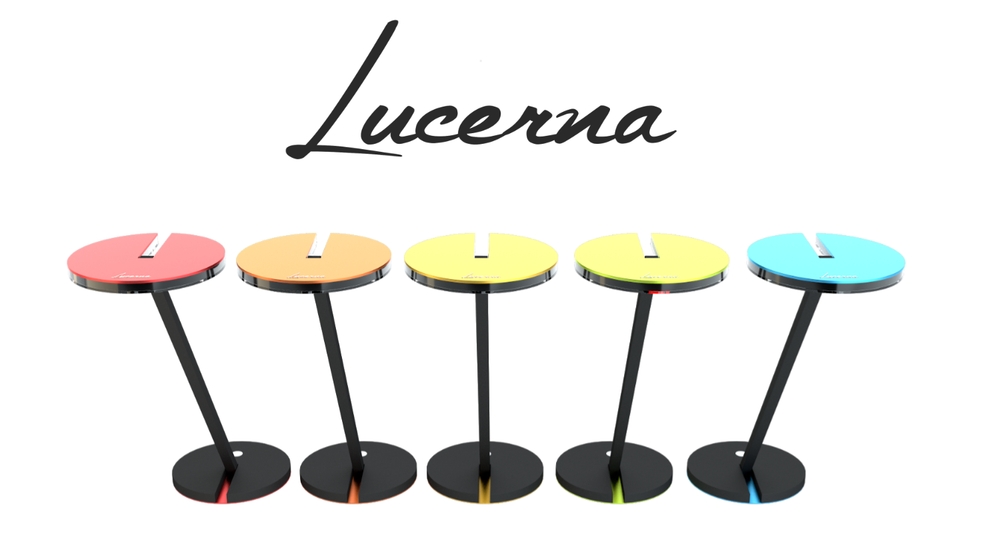

A course taken during my 4th year of Mechatronics, called New Venture Planning, involved a group project in which we were tasked to develop a product idea and the business plan around it. Our team came up with a product idea called Lucerna Lamp (as part of the company Lucerna, meaning "candle"), a desk lamp that adjusted temperature of light based on the time of day and other environmental factors in an attempt to reduce the harmful effects of excessive blue light exposure. We aimed to make the lamp stylish as a driving factor of interest in it and pitched that it would be primarily funded and promoted as part of a Kickstarter campaign.
Both images are 3D rendered impressions of the Lucerna Lamp, which were created in Blender. The renders were used in the presentation that was required for the project, together with a poster which can be downloaded using the button below.